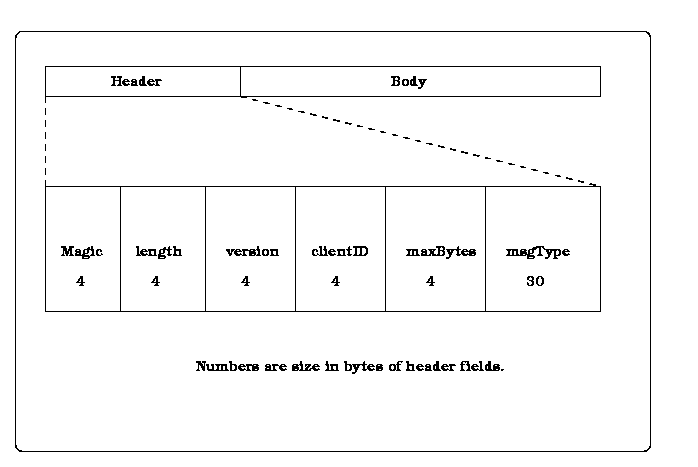
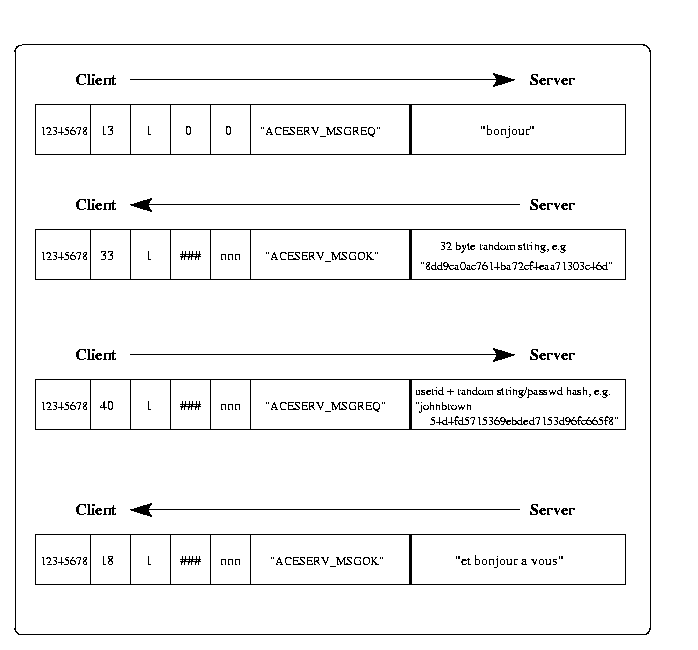
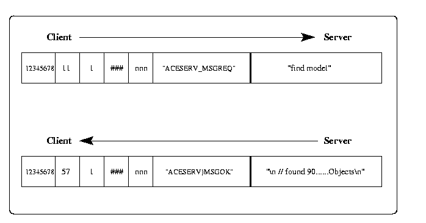
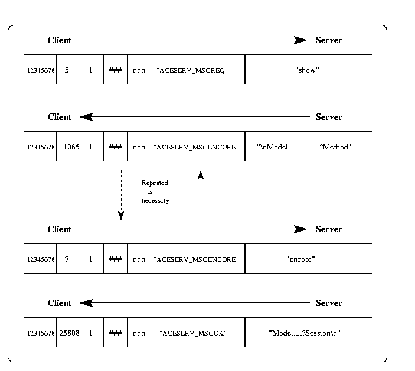
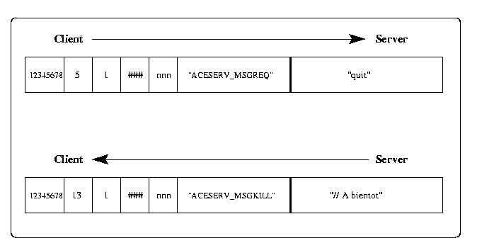
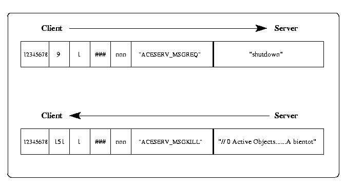
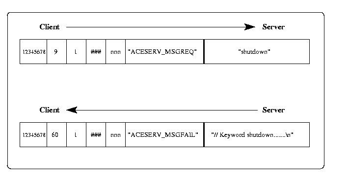
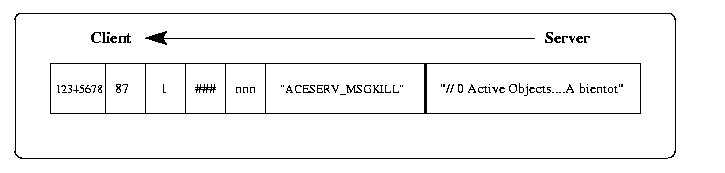

ACEDB Version 4_8
Interfacing to the Sockets-based Version Of The ACEDB Client/Server
Originally written byEd Griffiths <edgrif@sanger.ac.uk>, February 2000
Conventions used in this document
Note that strings such as "johnbrown" should be interpreted in the sense of C programming language strings:
in this document in memory
"johnbrown" johnbrown0
i.e. the string does not include the quotes, but does include a terminating
byte whose unsigned value is zero (the 'null' terminator).
Overview
Background
The first implementation of the ACEDB client/server code used RPC for
inter process communication (IPC). This method was originally
chosen because it offered the promise of a simple (function call based)
and portable means of making requests
between the client and server. In practice RPC suffered from
several major disadvantages:
- although
RPCwas offered by all major unix vendors, their implementations turned out to be buggy, in different ways (ironically, this was especially true of Suns implementation). - although
RPCoffers a very simple function call interface forIPC, error handling is not so simple and does not offer the fine grained control that other methods ofIPCdo. RPCfor MS Windows is not robust and does not completely follow the Unix standard.DCE RPCusing the DCE version of RPC would help with portability for both Unix and MS Windows, but the DCE version is often either not available or not available for free.- many other code subsytems offer packages for sockets communication (e.g. Perl) but not
RPC: using sockets makes it easier to interface to the server. - On unix at least,
RPCrequires several daemons to be running (portmapper, inetd) and this makes the system susceptible to system set up/reboot problems.
IPC because it overcomes
the above difficulties. Sockets of course present their own difficulties because the interface
to them is more complex to program than RPC, it's greater flexibility/portability
and ubiquitousness made this a worthwhile trade off.
Socket Types
There are several other variants of socket based protocols apart from RPC:- local domain
- UDP
- TCP
Local domain sockets are about 2 to 3 times as fast as UDP or TCP when run on a single machine, although the server does not currently support these it may be a worthwhile addition in the future.
UDP is not appropriate for the ACEDB client/server as it is a "fire and forget" protocol with no guarantee that messages actually arrive at their destination.
TCP on the other hand is a full duplex hand-shaking protocol with error handling that will reliably deliver messages or report faults. The ACEDB sockets based server currently supports communication via TCP only.
Byte swapping
We make the assumption that the only two architectures that we will encounter are Most Significant Byte first (MSB) or Least Significant Byte first (LSB).
The client is not required to know anything about the byte order of the host where the server is running, the only action the client must take is to set the magic byte of the message header so that the server will be able to detect which order the client machine uses. The server will take care of any swapping required. In fact this is usually minimal, involving only the message header to make sure that messages are interpreted correctly.
The Password System.
Users passwords are encrypted using the MD5 algorithm. The intention is to provide a level of security that is similar to UNIX logon passwords, the system is not infallible but helps to deter casual misuse.
The MD5 algorithm can be used to hash together any number of strings into a single 128 bit value that uniquely represents those strings. The server handles such hashes as the 32-byte hexadecimal string version of the number, i.e. each byte in the original number is turned into the two characters in the range 0-f that represent the unsigned version of that byte in hexadecimal, e.g. the byte whose unsigned decimal value is 90 would be "5a". (This conversion of MD5 output to a hex string is common place and any package that implements MD5 will probably implement this simple transform as well.)
Hence a typical hash of the userid and password would give:
Userid: "johnbrown"
Password: "veryobvious"
Hex string of hash: "48aad355983902438c109890a52d08f3"
The server does this conversion for serveral reasons:
- the md5 algorithm requires strings as input and we need to use some of the md5 output as input into a new md5 hash.
- it makes all handling of the encrypted data much simpler.
- using hex means that the string we produce consists entirely of the digits 0-9 and the letters a-f (i.e. no unprintable chars).
- the passwd hash can be kept in a plain text file in the database.
With md5, any number of strings can be hashed into one single "compound" hash, but the order in which this is done is important. In the following description of the hashing for the server password system it is essential to get the order right. A phrase like "Client does an MD5 hash of the userid followed by the password" means do the following (in pseudo code):
MD5Init()
MD5Update( the_userid )
MD5Update( the_passwd )
MD5Final()
In particular its important to note that the userid and password are always combined in a separate hash, the result of this hash is then combined in a new separate hash with the random value sent by the server. This is explained in more detail in the following paragraphs.
The sequence for normal authentification between client and server is:
- Client makes initial contact with server.
- Server sends a 32-byte hex string of an MD5 hash of an essentially random value.
"8dd9ca0ac7614ba72cf4eaa71303c46d" - The client must now supply a userid and password (perhaps by prompting the user
for them).
userid: "johnbrown" password: "veryobvious" - Client does an MD5 hash of the userid followed by the password
and creates a 32-byte hex string of this hash
"48aad355983902438c109890a52d08f3" - Client does a new MD5 hash of the userid/password hex string followed by
the servers random value and creates a 32-byte hex string of the resultant compound hash.
"54d4fd5715369ebded7153d96fc665f8" - Client sends the userid and this new hash to the server.
"johnbrown 54d4fd5715369ebded7153d96fc665f8" - Server checks client hash against its hash of the random value and the userid/password
hash that it holds for that userid.
userid/password hash for "johnbrown": "48aad355983902438c109890a52d08f3" random value for client: "8dd9ca0ac7614ba72cf4eaa71303c46d" gives a hash of: "54d4fd5715369ebded7153d96fc665f8" client hash was: "54d4fd5715369ebded7153d96fc665f8" Hashes are identical so the client is authenticated.
This way all hashes are handled as normal strings, passwords are never sent over the network as plain text, and its not possible for anyone listening to simply reuse the client userid/password hash because its combined with a different random value for each client session.
The intent here is to provide "reasonable" security, its still possible to breach this system but only by someone who knows a reasonable amount about networks/MD5 and so on.
Client/Server Protocol
This section describes:- format of messages passed between client and server
- signing on
- normal transactions
- 'sliced' transactions
- client terminations
- errors
- unsolicited messages
- abnormal server termination
- time outs
Message format
All messages have the same format summarised in the below diagram:

The format crucially relies on both client and server being able to correctly
format 4-byte integers into the header. With the exception of the msgType
field, all the header fields are integers. Clients on machines that do not support 4-byte integers
will have to produce either the LSB or MSB 4-byte integer format themselves.
The header fields have the following content:
- Magic
- This is the first field in the message and must be set by the client to the
the hexadecimal value
0x12345678. It is used by the server to detect whether the client is running on a machine with a different byte order from the server and hence whether the server should byte-swop the integer fields in the message. - length
- This field gives the 32-bit integer length of the message body in bytes.
- version
- This field gives the current protocol version, intended use is to allow changes in protocol in a way that the server and client can detect. Currently this is set to 1.
- clientID
- This field is filled in by the server, it is a unique ID that identifies the client to the server, the client should not change this.
- maxBytes
- This field gives the maximum reply length to be returned by the server. The server always returns the same value in this field (either the default or a user specified value taken from the command line when the server was started up. The client may set the field to any value between zero and the servers value and the server will return replies up to that value (smaller or larger values will are replaced with the servers value).
- msgType
- The most important field, this is not an integer but a string up to 30 bytes long
including the terminating
NULLchar. This string identifies the type of the message, the types are described below. A string is used to try to allow robust interfacing by languages other thanC, if enums were used these may be inadvertantly changed thus breaking the protocol. In addition, it's easier to see how the server is replying when testing a new client if the msgType is a string.
The msgType field can take the following values currently:
- "ACESERV_MSGREQ"
- Used by the client to indicate that the message body is a command for the server to execute.
- "ACESERV_MSGDATA"
- Used by the client to indicate that the message body contains not a command but ace format data that should be parsed into the database.
- "ACESERV_MSGOK"
- Set by the server to indicate that the last request from the client completed successfully.
- "ACESERV_MSGENCORE"
- Set by the server to indicate that the result of a request is so large that only part of it has been passed back and the client must ask the server for the rest.
- "ACESERV_MSGFAIL"
- Set by the server to indicate that a request has failed, it is combined with some text that gives the reason for the failure.
- "ACESERV_MSGKILL"
- Set by the server to indicate that it is terminating the clients connection, it is combined with some text to show the reason for the termination. After receiving this message the client will not be able to communicate with the server any more because the server will have closed its end of the connection.
Setting of these fields by the client and server is as follows:
- Magic
- Must be set only by the client the first time the client contacts the server. The client does not need to look at this field because all byte swapping is done by the server. In theory this field only needs to be looked at on the first transaction between client and server but currently the server looks every time so the client must send the same value every time.
- length
- Must be set to the length of the body of the message
by the client or the server whenever they send messages to each other.
NOTE that for strings the length sent must be the length of the characters in the string plus the usual terminating null char for the string.
- version
- Set only by the server the first time it replies to a new client (the same value will be sent by the server with each message).
- clientID
- Set by the server the first time it replies to the client, the client must return this value each time it contacts the server thereafter. The server will send the same value each time it replies to the client.
- maxBytes
- Set by the server the first time it replies to a new client (the same value will be sent by the server with each reply).
- msgType
- Must be set by the client or the server whenever they send messages to each other.
More detailed descriptions of how these fields are set/used are given in the following sections showing the typical transactions between client and server.
Signing on to the server
Normal "sign on" is a four message transaction with the client passing the users password in an encrypted form that is unique to this particular sign on. As with Unix passwords, the server stores the users password in an encrypted form and the password is never sent as plain text between server and client.
The client must set three fields in the header in the initial "hello" message: the "magic" byte swapping number, the string length of the hello message (13), the message type ("ACESERV_MSGREQ"). The message body must be set to "bonjour".
The server will respond with an MD5 encrypted 32-byte character string which the client must use to hash with its MD5 encryption of the users userid and password (see "The Password System" for more details of the encryption mechanics).

The client now responds with its hash of the users userid and password with the string sent by the server and sends it back.
If the server matches the hash to the one it has for the user then it will reply with a welcome message ("et bonjour a vous") and the client will be successfully connected.
A normal transaction
To make a request the only field the client needs to change in the header from the initial sign on is the message length field which must be set to the length of the request. The message body is the request which is "find model" in this case.

The server will then respond with a message, the client should check the msgType field to see if the request succeeded. If the request succeeded the message body will contain the results of the request, if it failed it will contain a string which explains the failure.
A sliced transaction
It's possible for a client to issue a request to the server which would result in an enormous reply, this would then prevent other clients from interacting with the server while the reply was being contructed. To avoid this the server will only produce the reply a "slice" at a time. This means that the client must be ready to receive the first slice and then ask the server for the next and so on.
The initial client request is as normal, in the server response however the msgType field is set to "ACESERV_MSGENCORE" to show that the response is incomplete.

The client must respond to the server with an "encore" request to get further slices. This continues until the server replies with a message where msgType is set to "ACESERV_MSGOK" indicating that the response is now complete.
Note that the length supplied with each "encore" message is the length of that slice only, it is the responsibility of the client to keep track of how much data has been passed back so far.
Normal termination
To terminate a session the client sends a normal request but with the message body set to "quit", the server will then send a termination message with the msgType set to "ACESERV_MSGKILL". Once the client receives a message with this msgType it should not try to send further messages to the server because the server will have closed its end of the connection.

While the client can close a connection simply by exitting, it is cleaner to send the "quit" message to the server and wait for the "ACESERV_MSGKILL" reply.
Normal shutdown
To shutdown the server the client sends a normal request but with the message body set to "shutdown" (perhaps with the "now" and "norestart" options"). The server will then send a termination message with the msgType set to "ACESERV_MSGKILL" and depending on the shutdown options will terminate either immediately or when the last client quits.

If the "now" option was specified then all other clients will be sent the termination message and their connections will be closed immediately.Errors
If the client sends a request that is in some way incorrect then the server will reply with a message with msgType set to "ACESERV_MSGFAIL" and the message body will contain some text to explain the problem. This mechanism is only used for non-fatal errors, fatal errors will result in the server sending a message of type "ACESERV_MSGKILL" and the clients connection with the server will be terminated.

The server can send Unsolicited Messages
Under certain circumstances the server may send a client an unsolicited "ACESERV_MSGKILL" message and close its connection.

This can happen under the following circumstances:
- If the server is sent a request to shutdown immediately then the server will send a termination messages to all clients and the connections of those clients will be closed.
- If a client times out then the server will send a termination message to that client and its connection will be closed.
- If the server times out then the server will send a termination messages to all clients and the connections of those clients will be closed.
When the server dies
If the server dies unexpectedly, perhaps because of some internal error, then the client will only detect this if it is monitoring the connection to the server. In this case the client will receive some notification from the operating system (e.g. a signal to show a "broken pipe" on a write to the connection or perhaps a null return from a read from the connection). If this happens it generally indicates that a serious error has occurred in the server and that no recovery could be made or termination messages sent to clients.
Time outs, client and server
Clients who connect and then do not send any requests to the server for the client timeout period (default is 600 seconds) will be sent an "ACESERV_MSGKILL" message and their connection will be closed. Similarly if there are no requests to the server at all for the server timeout period (default is 600 seconds), then all clients will be sent an "ACESERV_MSGKILL" message and their connections will be closed.
Format of admin commands
As the admin commands have a slightly more complex format (they include passwords, that in the acedb client are prompted for from the command line), this section shows the actual format of the command strings that must be sent across to the server.
For each command the syntax is given followed by an example of an actual string that would be sent across the server.
"user" command
Purpose: This command has several forms enabling an admin user
to create/update/delete userids.
syntax: user passwd|group|new|delete userid [password group]
Create new user:
user new new_userid new_group user_passwd_hash
e.g. "user new robbie read a9ab347d3c85d6eb12ad9f4b385ed6a5"
Delete user:
user delete userid
e.g. "user delete robbie"
Change users group:
user group userid new_group
e.g. "user group robbie write"
Change users password:
user passwd userid user_passwd_hash
e.g. "user passwd robbie 601ce17ce1fffbf5d457ad98a21360d5"
"global" command
Purpose: Change global read/write permissions for database syntax:global read|write none|passwd|worldChange global read perms:global read none|passwd|worlde.g. "global read none" Change global write perms:global write none|passwd|worlde.g. "global write world"
"domain" command
Purpose: This command is similar to the user command but enables the admin user
to create/update/delete domain names:
syntax: domain group|new|delete domain-name [group]
Create new domain:
domain new new_domain new_group
e.g. "domain new mynew.domain.new write"
Delete domain:
domain delete domain
e.g. "domain delete sanger.ac.uk"
Change domains group:
domain group domain new_group
e.g. "domain group ibm.com read"
ACEDB Version 4_8
Ed Griffiths <edgrif@sanger.ac.uk> Last modified: Mon Sep 23 13:50:21 BST 2002